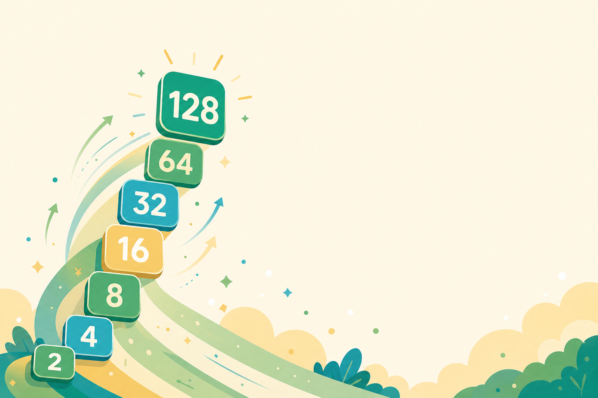

L2 ‧ 翻倍的威力與高手訣竅倍數的力量
2048：玩出數學腦 ‧ 颱風天線上課
01
CHAPTER 01
你覺得最厲害的
能玩到幾分
能玩到幾分
先猜一猜，答案可能比你想的還誇張。
03留言區｜猜世界紀錄
猜猜看：2048 最高能拼到多大？
▶在「留言區」打出你的答案：1／2／3／4
1
2048
破關就頂了。
2
4096
再翻一倍。
3
一萬多
高手才到。
4
六萬多
真有人做到。
04揭曉｜世界紀錄
答案揭曉：真實的世界紀錄
世界最高紀錄
65536
標準「4×4」盤面，就是 2 連乘 16 次。
明明只是一直翻倍，最後居然長到六萬多——真的有人做到。

五月天 阿信的 2048 紀錄：65536
05先用 16 看清楚｜幾個 2、合幾次
拼出 16，需要幾個 2？要合幾次？
把每個「2」想成參賽選手：要拼出 16，得先湊齊 8 個 2。
一路兩兩合併
- 先合 4 次 → 變成 4 個「4」
- 再合 2 次 → 變成 2 個「8」
- 再合 1 次 → 變成 1 個「16」
兩個不一樣的數：需要 8 個 2，卻只合 4＋2＋1＝7 次——像淘汰賽，8 個選手要打 7 場才選出冠軍。
06放大到 65536｜兩個問題
放大到世界紀錄：拼 65536 要多少？
問題① 需要幾塊（幾個 2）？
32768個
65536 ＝ 2 連乘 16 次，得先湊滿 32768 塊「2」（也就是 2 連乘 15 次）。
問題② 要合成幾次？
32767次
32768 − 1。像淘汰賽：32768 個選手，打 32767 場才選出 1 個冠軍。
需要的塊數＝ 最大數字 ÷ 2例：65536 ÷ 2 ＝ 32768 塊
需要合成的次數＝ 塊數 − 1例：32768 − 1 ＝ 32767 次
07影片｜摺紙上月球
翻倍有多猛？一張紙摺到月球

▶ 點擊播放
對摺 42 次，就能上月球
一張紙不斷對摺，每摺厚度翻倍，大約 42 次就能碰到月球。
08從加法到次方
換個寫法，又短又好懂
連加
3＋3＋3＋3
→
轉換成乘法
3×4
連乘
2×2×2×2×2
→
寫成次方
2⁵
比較好懂
右側更好懂，更清楚，這就是學更多數學的好處。
09個十百千萬
個十百千萬、億、兆，都是 10 的次方
個
1
＝ 10⁰
十
10
＝ 10¹
百
100
＝ 10²
千
1,000
＝ 10³
萬
10,000
＝ 10⁴
億
100,000,000
＝ 10⁸
兆
1,000,000,000,000
＝ 10¹²
102048 ＝ 2¹¹
2048，就是 2 連乘 11 次。
2×2×2×2×2×2×2×2×2×2×2
11 個 2 連乘
＝ 2¹¹ ＝ 2,048
每合併一次，次方就加 1。
11分組進行｜玩第二次
分組時間
玩第二次
10 分鐘
進到各組，一起玩原版 2048。帶著「翻倍、次方」的眼光，組內互相挑戰拼更高。
12分組進行｜怎麼操作
分組進行中
怎麼操作：兩種載具，兩種滑法
10 分鐘
電腦版
用鍵盤方向鍵
按上下左右，盤面就往那邊靠過去。
平板‧手機版
用手指滑
往哪邊滑，磚就往哪邊靠。
13分組進行｜計時挑戰
分組進行中
計時挑戰：帶著新眼光，再玩一局
10 分鐘
先別急著往下喔！用「翻倍」和「次方」的眼光，再玩一局原版 2048。
- 挑戰比上次更高的磚
- 看數字怎麼一路翻倍
- 組內互相報告最大的磚
02
CHAPTER 02
高手的
第一個訣竅
第一個訣竅
玩了兩次，發現光靠運氣不夠用了吧？
15為什麼會卡住
玩著玩著，盤面就動不了
最大的磚跑到中間擋路，兩邊合不到，空格越來越少。
卡住的徵兆
- 大磚卡在正中央
- 想合的兩顆湊不到
- 滑哪邊都沒反應
16好盤面 vs 壞盤面
同一個遊戲，兩種盤面
亂玩的盤面
- 大磚
- 卡在中間擋路
- 空格
- 越來越少
- 結果
- 很快就動不了
整齊的盤面
- 大磚
- 釘在角落
- 排法
- 由大到小蛇形
- 結果
- 一滑連著合
17為什麼不能擺中間
為什麼大磚不能擺中間？
1
把盤面切成兩半、互相擋路
左右小磚過不去。
2
中間的大磚幾乎長不大
餵不到同樣大的磚。
3
每滑一次就亂跑
往哪滑就往哪跑。
所以——最大的磚，要靠牆、釘角落。
18第一招｜角落
第一招：最大的磚，釘在角落
挑一個角落當基地，讓最大的磚一直待在那裡。
為什麼角落好
- 角落只連兩個方向，不易被推走
- 大磚不擋路，中間就空出來操作
19第二招｜蛇形
第二招：由大到小，排成一條蛇
從角落大磚開始，沿 S 形把數字由大排到小，像一條蛇。
這樣排的好處
- 相鄰常剛好差一級，很好合
- 盤面整齊，合併才會源源不絕
20第三招｜少用方向
第三招：留一個方向，先不亂用
大磚釘在右下角以後，有一個方向會把它推走。那個方向先收起來，當最後的救命招。
怎麼做
- 平常主要只用 下、右、左 三個方向
- 「往上」會把角落大磚推走，盡量別用
- 真的卡到不能動，才用它救一步
21進階｜連鎖合併
進階：先忍住，再一次引爆
1
布局
同一級的數字，先排到同一條線。
2
忍住
看到能合先別急，把位置鋪好。
3
一滑
排好了，往基地方向滑一下。
4
引爆
一連串合併，最大磚一口氣跳好幾級。
22這些招哪來的｜啟發式
這些招，是大家「一起玩」出來的
沒有發明人
不是某個人想到的
角落、蛇形、少用方向，都沒有單一發明人。
一起玩出來
全世界玩家的共識
2048 爆紅後，大家邊玩邊分享，慢慢玩出這些好規則。
很有效
好用，但沒被證明最好
這種「好用卻沒被證明最好」的規則，叫「啟發式」（heuristic）。
角落
蛇形
少用方向
23分組討論｜發想新玩法
分組時間
發想新玩法
5 分鐘
進到各組討論：2048 還能怎麼變？想一個新玩法，等一下舉手上台分享。
24分組進行｜發想方向
分組進行中
想想看：2048 還能怎麼變？
5 分鐘
方向一
換數字規則
不一定要翻倍，改成相鄰兩個相加？
方向二
換盤面形狀
不只 4×4，變大、變立體、變三角？
方向三
加新道具
炸彈、除以 2、洗牌，多點變化？
25下節預告｜各種變形
下一節，玩這些變形
費氏版 2584
- 規則
- 相鄰費氏數相加
- 數學
- 黃金比例
- 下次
- 第三節玩
立體 3D 版
- 盤面
- 3×3×3
- 方向
- 六個
- 下次
- 第三節玩
貪食蛇版
- 形式
- 即時對戰
- 對手
- 內建 AI
- 下次
- 第三節玩
下一節，2048 大變身
更進一步學會次方表示法（2048＝2¹¹），也學會進階的思考策略。下一節我們換數字、換盤面，還要看 AI 怎麼玩。